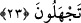

yahut müteallak ile müteallik arasında itiraz cümlesidir. Uyarı gereğince amel etmek
vacip olduğu için önceki hükmü takrir ve teyid etmektedir.
Bu itiraz cümlesi kavmini uyarmasıyla uyarı sözü olan “Allah’tan başkasına kulluk
etmeyin” sözü arasına girmiştir. Ki bu sûretle söz konusu takrir ve tekide sürat edilmiş
olsun ve onların söz konusu ibâdete iştirak etmeleri kendilerine bildirilmiş olsun. Mânâ
şudur: Ey Muhammed! Hûd’un kavmini uyardığı gibi sen de kavmini şirkin sonucundan
ve büyük azaptan uyar. Nihâyet ondan önce ve sonra da birçok elçiler kavimlerini bu
şekilde uyarmışlardı. Sen de onları uyar.
Bahru’l-ulûm’da şöyle denilmiştir: Buradaki “ ”, “ ”den tahfifleşen “ ”dir. Yâni
durum şudur ki siz yalnız Allah’a ibâdet ediniz. Yahut bu “ ” müfessire olup Allah’tan
başkasına ibâdet etmeyiniz, demektir. Yahut “bâ”nın hazfi ile bu “en” masdariyye olup
yine Allah’tan başkasına ibâdet etmeyiniz, demek olur. Bir şeyden nehyetmek, onun
zararından uyarmak, demektir.
“Büyük bir günün azâbına uğramanızdan korkuyorum.” Buradaki “büyük gün”,
“azabın onların üzerlerine indiği gün”dür. Burada günün büyüklüğü o günün şiddet ve
dehşetinden mecazdır. “Korkunç gün” demektir. Çünkü bu durum büyüklüğü gerektirir.
Yahut bu büyüklüğün zamana göre nisbet edilmesi doğrudan mecâzdır. “Azim”
kelimesinin mecrur oluşu ise “civar” yâni hemen yanındaki “yevm” kelimesinden
dolayıdır.
22. «Sen bizi tanrılarımızdan çevirmek için mi bize geldin? Hadi, doğru
söyleyenlerden isen, bizi tehdîd ettiğin şeyi başımıza getir» dediler.
“Dediler: “Sen bizi tanrılarımızdan”, onlara ibâdet etmekten, kendi dinine
“çevirmek için mi geldin?” Bu olmaz. Bize azâbın geleceği konusundaki sözünde
“doğrulardan isen bizi tehdîd ettiğin şeyi”, büyük azabı “bize getir.”
Bu “efik” kelimesi masdar olan “efek” kökünden olup “
” şeklinde gelir.
“Bir şeyden çevirmek” mânâsındadır.
23. Hûd da! Bilgi ancak Allah’ın katındadır. Ben size, bana gönderilen şeyi
duyuruyorum. Fakat sizin cahil bir kavim olduğunuzu görüyorum, dedi.
Hûd (a.s.) “dedi” azabın gelişi de aynı cümleden olarak: “bilgi”, her şeyin bilgisi